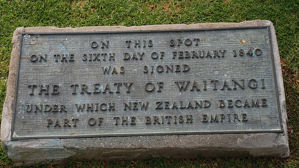
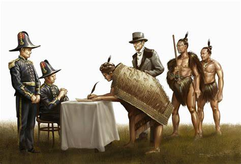
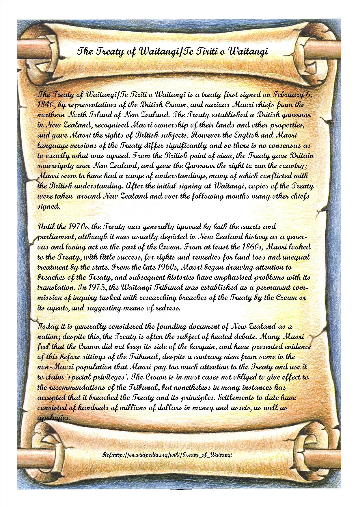
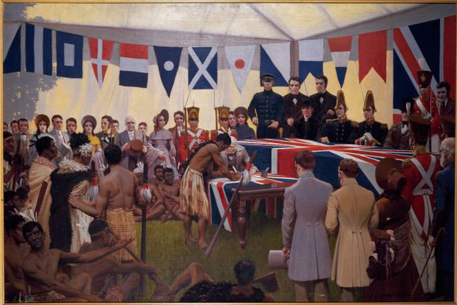
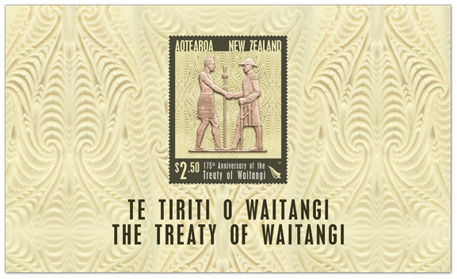

The Treaty of Waitangi is the founding document of New Zealand and is an agreement, in Māori and English people, that was made between the British Crown and about 540 Māori chiefs. Taking it's name from the place in the Bay of Islands where it was signed at first, on February 6, 1840. February 6 is now a public holiday in New Zealand. The Treaty is a group of principles on which the Māori and British made a political compact to found a nation state and also to build a stable government in New Zealand. Mainly, the document has three articles. The Treaty in Māori was deemed to convey the meaning of the English version, but there are important differences. Most significantly, the word ‘sovereignty’ was translated as ‘kawanatanga’ (governance). Some Māori believed they were giving up government over their lands but retaining the right to manage their own affairs.
Different understandings of the Treaty by various group of people have long been the subject of debate for a long time.
Treaty rests with the Waitangi Tribunal, a commission of inquiry that was created(1975) to investigate breaches of the Treaty by the Crown that are claimed. At least 2000 claims have been lodged with the tribunal, and a healthy number of major settlements have been achieved.
Copies of the Treaty sheets can be seen on the archives of New -Zealand's website. The original Treaty is on display in the He Tohu exhibition at the Aotearoa National Library of New Zealand in Wellington.
It is common now to refer to the intention, spirit or principles of the Treaty. The Treaty of Waitangi is not considered part of New Zealand domestic law, except where its principles are referred to in Acts of Parliament. The exclusive right to determine the meaning of the Treaty rests with the Waitangi Tribunal, a commission of inquiry created in 1975 to investigate alleged breaches of the Treaty by the Crown. More than 2000 claims have been lodged with the tribunal, and a number of major settlements have been reached.


English text =>
Waikato-Manukau Treaty copy (English)
HER MAJESTY VICTORIA Queen of the United Kingdom of Great Britain and Ireland regarding with Her Royal Favour the Native Chiefs and Tribes of New Zealand and anxious to protect their just Rights and Property and to secure to them the enjoyment of Peace and Good Order has deemed it necessary in consequence of the great number of Her Majesty's Subjects who have already settled in New Zealand and the rapid extension of Emigration both from Europe and Australia which is still in progress to constitute and appoint a functionary properly authorised to treat with the Aborigines of New Zealand for the recognition of Her Majesty's Sovereign authority over the whole or any part of those islands – Her Majesty therefore being desirous to establish a settled form of Civil Government with a view to avert the evil consequences which must result from the absence of the necessary Laws and Institutions alike to the native population and to Her subjects has been graciously pleased to empower and to authorise me William Hobson a Captain in Her Majesty's Royal Navy Consul and Lieutenant-Governor of such parts of New Zealand as may be or hereafter shall be ceded to her Majesty to invite the confederated and independent Chiefs of New Zealand to concur in the following Articles and Conditions.


Every year on 6 February, New Zealand marks the signing of the Treaty of Waitangi in 1840. In that year, representatives of the British Crown and over 500 Māori chiefs signed what is often considered to be New Zealand’s founding document. The day was first officially commemorated in 1934, and it has been a public holiday since 1974. For some people, Waitangi Day is a holiday; for many, and especially for Māori, it is the occasion for reflecting on the Treaty. Since the 1970s the style and mood of the commemorations on Waitangi Day have been influenced by the increasingly heated debate surrounding the place of the Treaty in modern New Zealand.
Waitangi Day is recognised as New Zealand's national day, but the long-standing tensions associated with it are always likely to surface in one form or another. The date is an important marker in the country's history. Recognition of the significance of the Treaty of Waitangi as the nation's founding document will continue to encourage leaders, communities and individuals to mark the day in new ways.